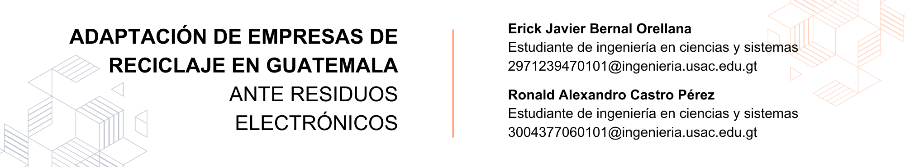

8 Adaptación de empresas de reciclaje en Guatemala ante residuos electrónicos

8.1 Introducción
Para estimar la importancia del reciclaje electrónico en Guatemala, es importante evidenciar la cantidad aproximada de basura electrónica que los guatemaltecos generan por año, implementando el análisis propuesto por Statista, en donde muestra un aumento gradual de tres a cinco mil toneladas por año, considerando la cifra pivote de ochenta y dos mil toneladas en el año dos mil veintiuno, estimando una media de noventa mil toneladas para el año dos mil veinte tres.
8.2 Artículo
Según un artículo publicado por Defensores de la naturaleza “Para el caso de Guatemala, de acuerdo con las recientes estimaciones del programa PREAL (Programa de Promoción de la Reforma Educativa en América Latina y el Caribe), cada guatemalteco en el 2021 generará en promedio 3.4kg de residuos electrónicos al año, equivalente a 22 teléfonos celulares o 4 cafeteras convencionales! En total como país generaremos 54 mil toneladas de RAEE (Residuos de aparatos eléctricos y electrónicos) y desafortunadamente un pequeño porcentaje tendrá una gestión inadecuada.”
Al pensar que la basura proveniente de los equipos informáticos no hace más que crecer año con año y que representa una amenaza para la salud y el medio ambiente, resulta necesario evidenciar, toda aquella empresa, programa o guatemalteco que trabajan para mitigar este suceso.
Por ello podemos visualizar cómo las empresas en Guatemala buscan generar un impacto en la sociedad y en la naturaleza del país, y cómo contrarrestar el impacto negativo de la contaminación electrónica en la ecología y la salud.
Es importante recordar que, las empresas de reciclaje electrónico en Guatemala buscan satisfacer las necesidades de obtención de equipo electrónico de desecho, considerando como el principal objetivo, la recolección de una cantidad de materiales diversos, recordando, que los equipos electrónicos están compuestos por una diversa cantidad de componentes, que pueden ser implementados de manera directa como refacciones o utilizarlos para generar una nueva materia prima, extrayendo sus componentes base como hierro, estaño, oro, níquel, entre otros.
Al considerar reciclar equipos electrónicos, es importante mencionar que estos pueden gestionarse de manera diversa, dado que el uso previo o simplemente la naturaleza del mismo, genera la necesidad de aplicar un método apropiado para la correcta manipulación y futura reutilización de sus componentes, para evidenciar cómo la naturaleza de un equipo informático afecta su reutilización, visualizamos lo siguiente:
Existen empresas que se encargan de gestionar los desechos electrónicos, enfocándose en un programa de divulgación, el cual pretende generar un cambio en sectores específicos de la población, generando una ola de recaudación de equipos electrónicos de desecho, implementando concientización y educación.
En el momento que empresas, como E-Waste de Guatemala, aplican sus programas de divulgación y presenta un plan definido de acción, en donde busca establecer un accionar adecuado acorde a la edad de los interesados. También es importante evidenciar, que existen otras empresas sin fines de lucro que también utilizan un ambiente educativo, para generar un impacto positivo.
Siendo esta EdulibreOs, empresa encargada de generar una nueva distribución de GNU/Linux diseñado y construido pensando en los centros educativos de nivel primaria, básicos y diversificado, solicitando al público en general, todo aquel equipo electrónico que sea considerado como desecho, esto con el fin de implementar las partes funcionales, en equipos computacionales en los cuales pueda ser instalado el sistema operativo, dichos equipos informáticos, se entregan en función de donación a escuelas de escasos recursos.
Al considerar equipos electrónicos es importante recordar, que la mayoría de las empresas o personas particulares utilizan equipos informáticos, con el fin de guardar y administrar información personal o de alta confidencialidad. Pensar en reciclar bajo esta premisa, puede generar rechazo, dado el miedo latente a la divulgación de dicha información.
En Guatemala existen empresas (como Recelca) que ofrecen un servicio, más allá del reciclaje, ofreciendo seguridad en la manipulación de los datos, aplicando normas internacionales de manipulación de data como 5220.22M, para el borrado y destrucción de data en la gestión de los equipos tecnológicos, ofreciendo como garantía certificados de borrado, el cual busca mitigar riesgos y cumplir con las leyes y reglamentos de protección de la información a nivel nacional e internacional.
Como empresa es capaz de ofrecer una correcta manipulación de desechos de equipos informáticos y generar valor. Empresas como Recelca, buscan como primer punto, estimar el valor económico del equipo informático, esto con el fin de definir el flujo de acción de este, si dicho equipo presenta características óptimas para la reutilización de piezas, este es asignado al área de reparación y reacondicionamiento de equipos, en el cual puede realizar servicios de reparación en la mayoría de las principales categorías de productos eléctricos y electrónicos gracias a que cuenta con un centro de reparación.
Figura 8.1: Volumen de generación de residuos electrónicos en Guatemala de 2015 a 2021(en miles de toneladas métricas)
8.3 Conclusiones
Basándonos en los datos presentados en la gráfica y en la información propuesta por las diversas empresas citadas, podemos encontrar los siguientes hallazgos:
La basura tecnológica se encuentra en constante aumento en los últimos años, sobre todo por el aumento en la producción y distribución de equipos electrónicos.
Los residuos de aparatos electrónicos liberan varias toxinas que, de no haber entidades encargadas de la correcta gestión de estos desechos, el impacto no solo a la naturaleza si no la población en cuestión de salud puede ser más perjudicial.
La variedad de empresas en Guatemala que están comprometidas con mitigar el problema de la basura tecnológica, trabajando en el correcto manejo de los desechos, cada una tiene su forma para el manejo y recolección, además de contar con programas para una mayor divulgación de este problema y las consecuencias que generan.
Las empresas en Guatemala ofrecen servicios especializado acorde a las necesidades, que presentan los propios, desechos de equipos informáticos como servicios exclusivos y estandarizados los cuales atienden tanto a la industria como al ciudadano común.
8.4 Referencias
[1] “Fundación Centro Guatemalteco de Producción más Limpia”, CGP+L, acceso el 03 de agosto de 2023, https://cgpl.org.gt/
[2] “Volumen de generación de residuos efectivamente en Guatemala de 2015 a 2021”, Statista Research Department, acceso el 03 de agosto de 2023, https://es.statista.com
[3] “¿Qué son los RAEE?”, Recelca, acceso el 03 de agosto de 2023, https://www.recelca.com/
[4] “Servicio de Destrucción Total”, Reciclama, accesos el 03 de agosto de 2023, https://reciclamagt.com